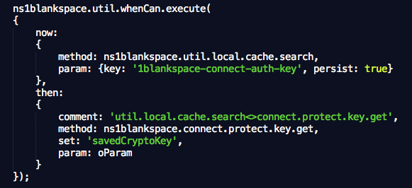

1BLANKSPACE
|
|
When it comes to out-of-closure assignment; designing & coding for human interaction within a distributed environment requires a different approach to conventional programming. ie function a() As the c() method/function may contain asynchronous processes the code logic would be faulty, as the alert() function would be invoked before the c() function had returned. You could revert all asynchronous processes to synchronise processes, but that would "lock" the user interface and result in a poor user experience. A better approach is to not use direct assignment but inter-closure promises. In this case the b function will return to the result to the a() function as a parameter, defined as part of the original promise agreement. 1blankspace supports this via the util.whenCan namespace, as described below. |
KEY CONCEPTS
|
| 1 | .execute | This is the main method that sets up the whenCan promise. It accepts to main parameters as objects: now: & then:.
The now: object: # method: the 1blankspace method to by run immediately - in the example above, this is function c() The "now" method must use the util.whenCan.return() method to be compliant with the whenCan namespace. The then: object: # method: the 1blankspace method to by run when the "now" method has completed - in the example above, this is function a() |
|
 |
||
| 2 | .return | This is used by the "now" method to return the value to the "then" method that initiated the promise.
It sets the attribute described as the "set" parameter in the original .execute() request. ie return ns1blankspace.util.whenCan.return(sCryptoKey, oParam); The first return is optional - it just creates fall-back option if no existing promise, so can method can be used in a synchronous direct assignment pattern. Using the code example in the .execute section - the sCryptoKey would be returned to the .connect.protect.key.get method in the parameter object as savedCryptoKey. |